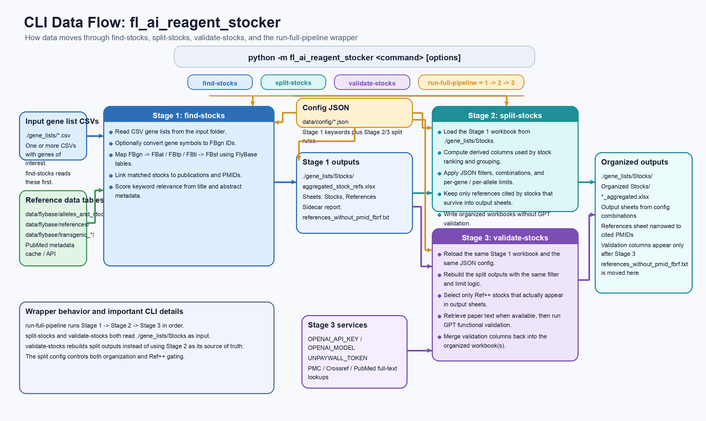

fl_ai_reagent_stocker: Practical Pipeline Guide
This guide explains how to go from a gene list to a curated set of candidate fly stocks with supporting literature, config-driven organization, and optional AI validation.
What You Get
- A stock-level workbook linked to references
- Organized output sheets based on your JSON rules
- A references table narrowed to papers relevant to selected stocks
- Optional validation columns for
Ref++output-sheet stocks
Visual Overview
Data Flow

High-Level Overview

Rules And Evidence Decisions

Quick Start
Install dependencies from the repository root:
pip install -r requirements.txtRun the full workflow:
python -m fl_ai_reagent_stocker run-full-pipeline ./gene_lists --config ./my_split_config.json --test-logOr run the three explicit stages:
python -m fl_ai_reagent_stocker find-stocks ./gene_lists
python -m fl_ai_reagent_stocker split-stocks ./gene_lists/Stocks --config ./my_split_config.json
python -m fl_ai_reagent_stocker validate-stocks ./gene_lists/Stocks --config ./my_split_config.json --test-logStage 1: find-stocks
python -m fl_ai_reagent_stocker find-stocks ./gene_lists- Converts gene symbols to FBgn IDs unless skipped
- Maps genes to alleles, constructs, insertions, and stocks
- Expands FBtp constructs through
data/flybase/transgenic_insertions/fbtp_to_fbti.csv - Links matched components to references and PMIDs
- Writes
./gene_lists/Stocks/aggregated_stock_refs.xlsx
Stage 2: split-stocks
python -m fl_ai_reagent_stocker split-stocks ./gene_lists/Stocks --config ./my_split_config.json- Loads the Stage 1 workbook
- Computes derived columns such as
Balancers,multiple_insertions, andALLELE_PAPER_RELEVANCE_SCORE - Applies JSON filters and combinations from
data/config/ - Writes organized workbooks to
./gene_lists/Stocks/Organized Stocks/ - Does not run GPT validation
Stage 3: validate-stocks
python -m fl_ai_reagent_stocker validate-stocks ./gene_lists/Stocks --config ./my_split_config.json --test-log- Rebuilds the same split outputs using the same config
- Selectively validates only
Ref++output-sheet stocks - Merges validation columns back into the organized workbook
- Supports
--soft-run,--test-log, and--max-gpt-calls-per-stock
Config File Contract
The JSON config files stay in data/config/ and keep the same splitting behavior through the refactor.
settings.relevantSearchTermsstill defines keyword relevance andRef++filtersstill defines reusable predicatescombinationsstill defines sheet partitionsfilterDescriptionsstill defines user-facing sheet descriptions
Helper Scripts
scripts/fetch_fbgn_ids.pyscripts/build_fbst_derived_stock_components.pyscripts/build_fbtp_to_fbti_mapping.pyscripts/refresh_flybase_data.py
Outputs
- Stage 1 workbook:
./gene_lists/Stocks/aggregated_stock_refs.xlsx - Organized output directory:
./gene_lists/Stocks/Organized Stocks/ - Output paths remain unchanged even though the package and command names changed
Canonical package namespace: fl_ai_reagent_stocker.